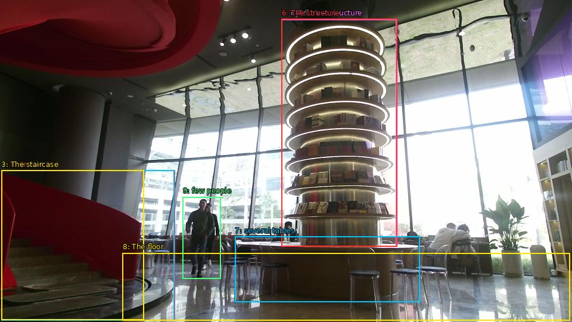

The image shows the interior of a modern building with a large circular staircase on the left side. The staircase is made of red metal and has a curved design. On the right side of the staircase, there is a tall, cylindrical structure with multiple levels. The structure appears to be made of glass and metal, and it is filled with books of different sizes and colors. In the center of the structure, there are several tables and chairs arranged in a circular pattern. The floor is tiled, and there are a few people walking around the space. The background shows a large window with a view of the city skyline. The overall atmosphere of the space is bright and airy.

Original · Caption raw · Grounding raw · Koordinate
Številke so lokalni ID regije. Dolge slikovne oznake so skrajšane; spodaj so celotne fraze. Napovedane regije se lahko prekrivajo ali opisujejo skupine.
| ID | Celotna fraza | bbox xyxy |
|---|---|---|
| 1 | staircase | [2.3999998569488525, 285.9300231933594, 293.2799987792969, 537.030029296875] |
| 2 | The staircase | [2.3999998569488525, 285.9300231933594, 292.32000732421875, 537.030029296875] |
| 3 | The staircase | [2.3999998569488525, 285.9300231933594, 241.4399871826172, 536.4900512695312] |
| 4 | a tall | [472.79998779296875, 32.130001068115234, 666.719970703125, 413.9100036621094] |
| 5 | cylindrical structure | [472.79998779296875, 32.130001068115234, 665.760009765625, 413.9100036621094] |
| 6 | The structure | [472.79998779296875, 31.590002059936523, 666.719970703125, 413.9100036621094] |
| 7 | several tables | [394.0799865722656, 396.6300048828125, 704.1599731445312, 506.7900085449219] |
| 8 | The floor | [205.9199981689453, 424.1700134277344, 956.6399536132812, 537.030029296875] |
| 9 | few people | [306.7200012207031, 330.21002197265625, 370.0799865722656, 467.3700256347656] |